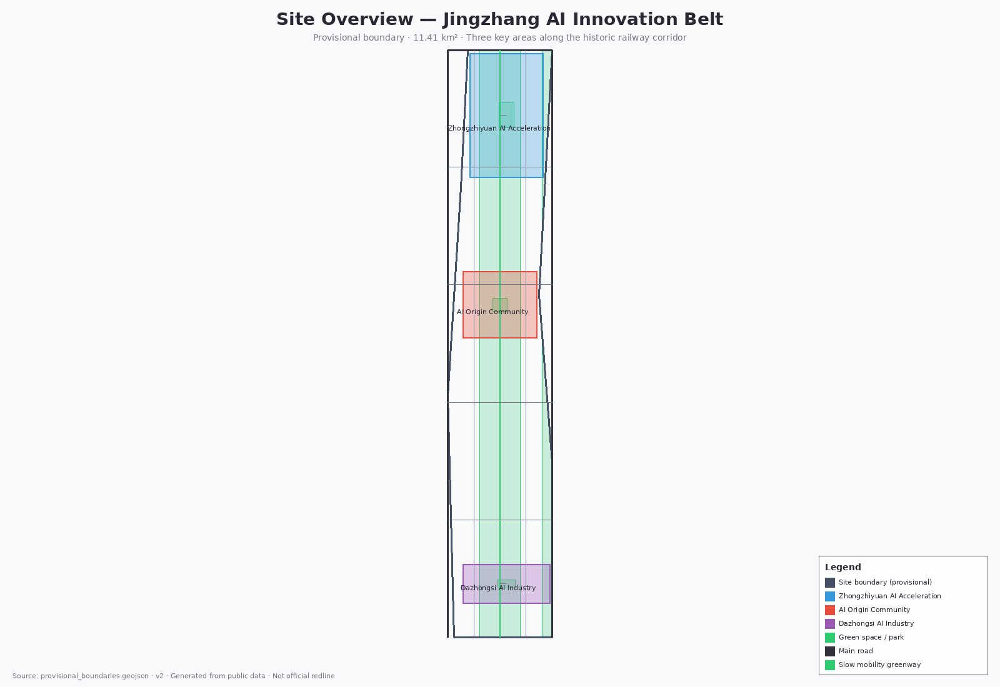
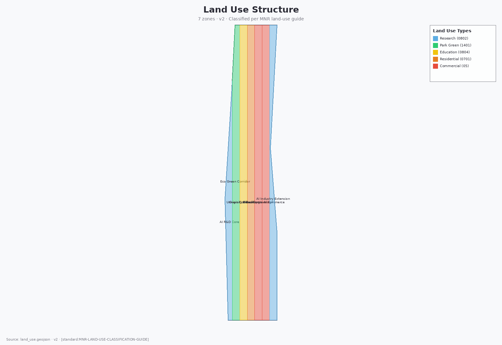
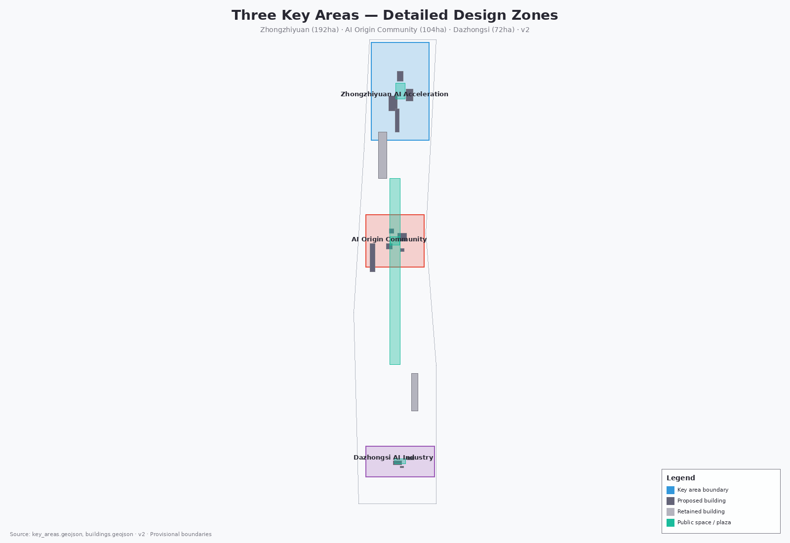
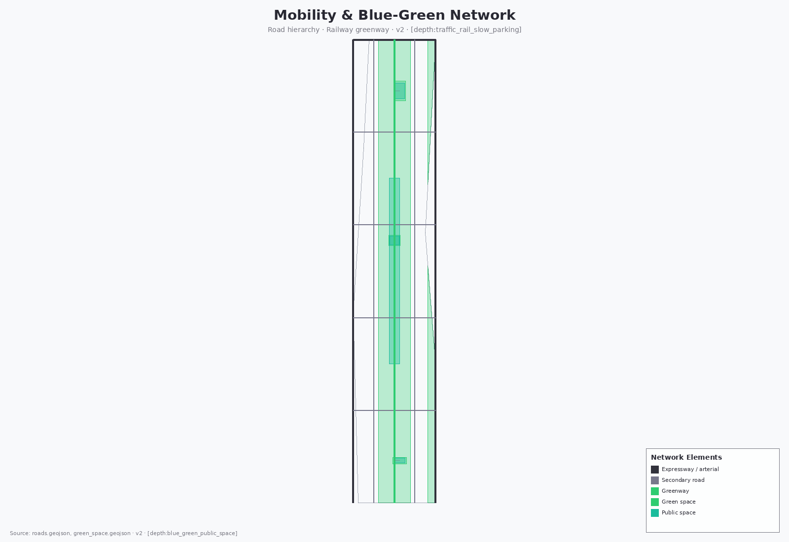
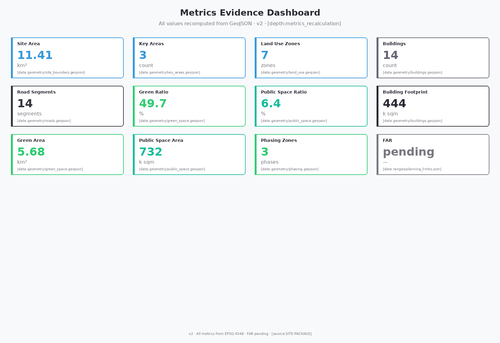

Jingzhang AI Innovation Belt · Formal Urban Design Submission · Hermes Agent


| Level | Area | Design question | Proposal answer |
|---|---|---|---|
| Coordinated research scope | 43.6 km² | AI industry ecosystem and future urban form | Innovation chain: "university origination → open-source collaboration → enterprise translation → public experience → international communication" |
| Overall design scope | 11.4 km² | Industry space, urban renewal, transport and municipal systems | 7 land-use zones, 14 buildings, 14 road segments |
| Key area scope | 368.4 ha | Detailed design of three districts | Positioning, spatial moves, and AI scenarios for each |

| District | Positioning | Spatial moves | AI scenarios |
|---|---|---|---|
| Zhongzhiyuan | Garden-style full-stack independent-innovation block | Qinghe interface, industry showcase, low-carbon innovation | Model testing, standard-setting, safety governance |
| AI Origin Community | Campus-adjacent translation and talent community | Campus-park slow-mobility stitching, achievement launches | Open-source community, launches, talent zone |
| Dazhongsi | Urban intelligent-economy and international-engagement block | Station integration, four-quadrant pedestrian connectivity | Agent showcases, content consumption, international roadshows |
| ID | Code | Type | Positioning |
|---|---|---|---|
| LU-001 | 0802 | R&D land | Zhongzhiyuan AI R&D core |
| LU-002 | 1401 | Park green space | Zhongzhiyuan ecological green corridor |
| LU-003 | 0804 | Education land | University collaboration area |
| LU-004 | 0701 | Urban residential | AI Origin Community housing |
| LU-005 | 05 | Commercial / business services | Mixed commerce A |
| LU-006 | 05 | Commercial / business services | Dazhongsi AI commerce |
| LU-007 | 0802 | R&D land | Dazhongsi intelligent-terminal R&D |

| ID | Type | Name | Status |
|---|---|---|---|
| ROAD-001 | Arterial | Xueyuan Rd – Xitucheng Rd | Retained as-is |
| ROAD-003 | Expressway | North Fifth Ring | Retained as-is |
| ROAD-011 | Greenway | Heritage park slow-mobility greenway | Design proposal |
| ROAD-004~010 | Secondary / branch | Longitudinal / transverse secondaries | Design proposal |
| Type | Count | Main spaces | Metric |
|---|---|---|---|
| Green space | 5 sites | Heritage park greenway, Zhongzhiyuan central park, AI Origin pocket park, Dazhongsi plaza green, eastern protective belt | Green ratio 49.7% |
| Public space | 4 sites | Zhongzhiyuan innovation plaza, AI Origin community plaza, Dazhongsi station forecourt, railway heritage activity band | Public-space ratio 6.4% |
| ID | Type | Name | Area | Retain / renovate / new |
|---|---|---|---|---|
| BLDG-001 | AI R&D | AI R&D tower | Zhongzhiyuan | New build |
| BLDG-002 | Laboratory | Standards laboratory | Zhongzhiyuan | New build |
| BLDG-003 | Incubator | Incubator & accelerator | Zhongzhiyuan | New build |
| BLDG-004 | Office | Innovation office | AI Origin | New build |
| BLDG-005 | Mixed use | Mixed-function complex | AI Origin | New build |
| BLDG-006 | Talent apartments | Talent apartments | AI Origin | New build |
| BLDG-007 | Cultural exhibition | AI culture exhibition center | AI Origin | New build |
| BLDG-008 | Commerce | Intelligent commerce complex | Dazhongsi | New build |
| BLDG-009 | Office | Enterprise headquarters office | Dazhongsi | New build |
| BLDG-010 | Interchange | Rail interchange hub | Dazhongsi | New build |
| BLDG-011 | Existing stock | Retained cluster A | Overall scope | Retain |
| BLDG-012 | Existing stock | Retained cluster B | Overall scope | Retain |
| BLDG-013 | Community services | Community service center | Overall scope | New build |
| BLDG-014 | Education | AI education experience hall | Overall scope | New build |
| ID | Project | Type | Key dependencies |
|---|---|---|---|
| JZ-01 | Heritage park slow-mobility gap stitching | Public space / transport | Road red-lines, under-bridge space |
| JZ-02 | Zhongzhiyuan Qinghe innovation interface | Blue-green / industry showcase | River blue-line, flood conditions |
| JZ-03 | Origin Community campus-adjacent translation street | Urban renewal / industry services | Campus boundary, ownership |
| JZ-04 | Dazhongsi four-quadrant pedestrian connection | Rail integration / slow mobility | Rail station, municipal pipelines |
| JZ-05 | AI public services and edge-compute nodes | New infrastructure / public services | Energy, compute, safety |
| JZ-06 | Global AI Week public route | Operations / brand | Public-space permits, copyright |
AI Origin Community pilots
Zhongzhiyuan acceleration-area renewal
Dazhongsi industry-area deepening
AI Origin Community · launches / code display / roadshows
Zhongzhiyuan · standard-setting / safety evaluation / red-team testing
Overall scope · new-infrastructure prototype
Heritage park · explainable wayfinding / gap identification
Dazhongsi · exhibits / negotiations / media / international exchange
Zhongzhiyuan · green space + walking + AI exhibits
AI Origin · incubation / legal / IP / investment
Dazhongsi · compliant data-element / digital-asset flows
Community commerce · medical / education / legal / daily-life AI+
Public spaces · walkable, communicable experience route
Dazhongsi → AI Origin · robot delivery trials
Wudaokou · measured AI traffic optimization
Heritage park · crowd heatmaps / safety alerts

Jingzhang AI Symbiosis Belt, naming system, logo direction, three-district/two-wing synergy
5 global cases, ecosystem map, Zhongzhiyuan full-stack system
10 scenario cards, 3 validation scenarios, 5 user personas
Heritage-park AI space, 3 pilgrimage landmarks, honor system
Railway → Zhongguancun → AI three-layer narrative, signage direction, international communication
Annual events, developer community, scenario open days, international conversion
| Check | Result | Severity | Note |
|---|---|---|---|
| BOUNDARY_TRUST | Pass | major | Provisional boundary present |
| KEY_AREAS_TRUST | Pass | major | Three key areas provisional |
| LAND_USE_TOPOLOGY | Pass | major | Land-use polygons derived from boundary |
| VISUAL_STATIC | Pass | info | Static HTML, no external dependencies |
| PROFESSIONAL_EVIDENCE | Pass | major | Standards, depth, geometry, and metric references included |
| ID | Source | Type | Use |
|---|---|---|---|
| OFFICIAL-ANNOUNCEMENT | Prequalification announcement | official_public | Scope, tasks, deliverables |
| AGENT-TASKBOOK | Agent taskbook | user_provided_cleared | 6 agent tasks, 10 principles |
| SITE-PACKAGE | brief/site-package/ | official_public | Brief, enums, schemas |
| BOUNDARY-SOURCE | provisional_boundaries.geojson | provisional | Temporary boundary |
| SOURCE-REGISTRY | data/source_registry.json | registry | Source usability classification |